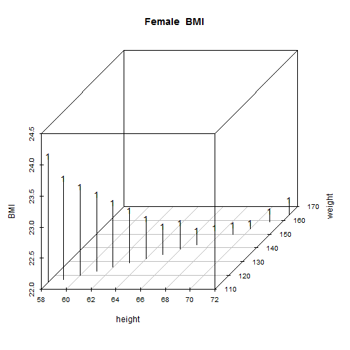

There is an old saying, "at least I have my health", and that saying has never been more true than in today's age of fast means and less active lifestyles!
Nino White
There is an old saying, "at least I have my health", and that saying has never been more true than in today's age of fast means and less active lifestyles!
The Body Mass Index, or BMI, is a calculation used to determine your level of body fat. It is a quick gauge of a persons overall fitness and risk of developing chronic diseases.
Generally, if you're at a healthy weight, your body mass index should fall between 18.5 and 24.9, notes the National Heart, Lung and Blood Institute. If your BMI is below 18.5, you could be underweight. On the other hand, a BMI greater than 25.0 is categorized as overweight, while a score above 30 is considered obese.
scatterplot3d(height, weight, BMI, main = "Female BMI", pch = "16", type = "h")
